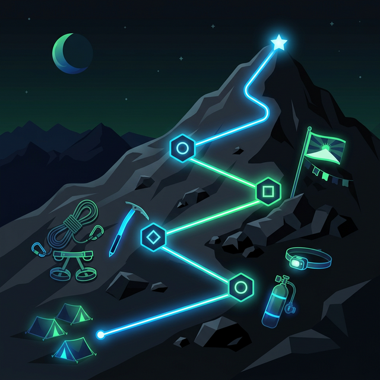

You take zero financial risk. We succeed only when you do, unlocking meaningful gains in operational efficiency and profitability.
You take zero financial risk. We succeed only when you do, unlocking meaningful gains in operational efficiency and profitability through a strictly performance-contingent model.
Conventional consulting often carries high upfront costs and misaligned incentives—where you pay for hours instead of outcomes. This creates financial drag and uncertainty at critical growth stages.
We begin with a thorough, no-cost diagnostic review of your operations, technology stack, and organizational structure—uncovering hidden inefficiencies, untapped opportunities, and sources of profit leakage that often go unnoticed.
Only when clear potential for improvement is identified do we proceed. We then design and execute targeted interventions to capture that value. Our compensation is purely performance-contingent: we earn 27% of the verifiable incremental profit or cost savings we help generate. Should our work not deliver measurable financial benefit, you owe nothing.
By integrating advanced AI code vibing workflows into the client's development pipeline, we multiplied their engineering throughput. This velocity surge allowed them to launch critical new features months ahead of schedule, driving massive new subscription revenue.
Alignment of interests. Mitigation of risk. Multiplier of results.
We guide your organization through the complexities of cloud adoption. As your Sherpa, we ensure your cloud infrastructure is scalable, cost-effective, and perfectly aligned with your business objectives.
Disconnected cloud environments, spiraling costs, and "cloud-first" mandates without a roadmap lead to operational drag and wasted investment.
Ready for a clearer cloud horizon? Schedule your Basecamp Consultation.
Schedule a ConsultationWe partner with you to align your technology with your business mission. As your Sherpa, we modernize your operations, ensuring your team has the right tools for the long-term climb.
Legacy systems and manual workflows act as heavy anchors, slowing your organization's growth and frustrating both employees and customers.
Ready to unlock your digital potential? Book your no-risk review.
Talk to an ExpertProtect your organizational value from cyber threats. As your Sherpa, we build unbreakable defenses and a culture of security, ensuring your climb remains safe and focused.
Breaches and data leaks are the "avalanches" of the digital world—sudden, devastating, and capable of destroying years of hard-won progress.
Is your flank secured? Schedule your security review now.
Schedule a ConsultationWe lead pragmatic AI adoption—assessing terrain, prototyping paths, and only scaling proven routes. As your Sherpa, we ensure AI accelerates your climb without unnecessary risks.
Hype clouds judgment; many organizations invest in AI without a clear ROI, leading to expensive dead ends and technical debt.
Ready to automate your success? Book your AI review.
Request a QuoteDelivering complex technology programs on time and within scope. As your Sherpa, we provide the leadership and framework required to reach your most ambitious project goals.
Over 70% of IT projects fail to meet their original objectives, suffering from scope creep, budget overruns, and lack of stakeholder alignment.
Need a steady hand on the helm? Schedule a consultation.
Schedule a Consultation
We step in when projects stalle or fail. As your Sherpa, we conduct rapid "search and rescue" for failing implementations, getting your most critical programs back on the path to success.
A failing million-dollar IT project creates more than just financial loss—it creates organizational trauma, erodes trust, and threatens the business mission.
Is your project in trouble? Don't wait for total failure. Contact us immediately.
Emergency Program RescueStrategic Ascent is the culmination of your Sherpa journey — the point where operational transformation becomes self-sustaining growth. As your Sherpa, we don't just help you reach the top; we ensure you thrive there.
Organizations that reach Strategic Ascent have moved beyond reactive IT and operational firefighting. They operate with aligned technology, empowered teams, measurable KPIs, and a culture of continuous improvement — positioned to outpace competitors at every turn.
Ready to begin your ascent? Your summit starts with a single conversation.
Schedule Basecamp ConsultationNo upfront fees • Verifiable results only • 100% alignment